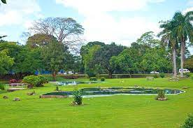

TOURIST ATTRACTIONS IN PORT OF SPAIN

1
Queen's Park Savannah
Queen's Park Savannah is a park in Port of Spain, Trinidad and Tobago. Known locally as simply "the Savannah," it is Port of Spain's largest open space. It occupies about 260 acres of level land, and the distance around the perimeter is about 2.2 miles
2
Emperor Valley Zoo
It is located North of the Queen's Park Savannah and West of the Royal Botanic Gardens in Port of Spain. The zoo was first opened on 8 November 1952 by Governor Sir Hubert Rance. At that time, there were 10 cages containing 127 animals, mainly indigenous species.

3
National Museum & Art Gallery
The National Museum and Art Gallery is the national museum of Trinidad and Tobago, in Port of Spain on Trinidad island. It is located at the top of Frederick Street, opposite the Memorial Park, and just south of the Queen's Park Savannah.

4
The Royal Botanic Gardens
The Royal Botanic Gardens in Trinidad and Tobago is located in Port of Spain. The Gardens, which were established in 1818, are situated just north of the Queen's Park Savannah. This is one of the oldest Botanic Gardens in the world.
5
The Cathedral of the Immaculate Conception
The Cathedral Basilica of the Immaculate Conception is a Catholic cathedral in Port of Spain, Trinidad and Tobago. It is the seat of the Archdiocese of Port of Spain. Construction started in 1816 and it was completed in 1851.